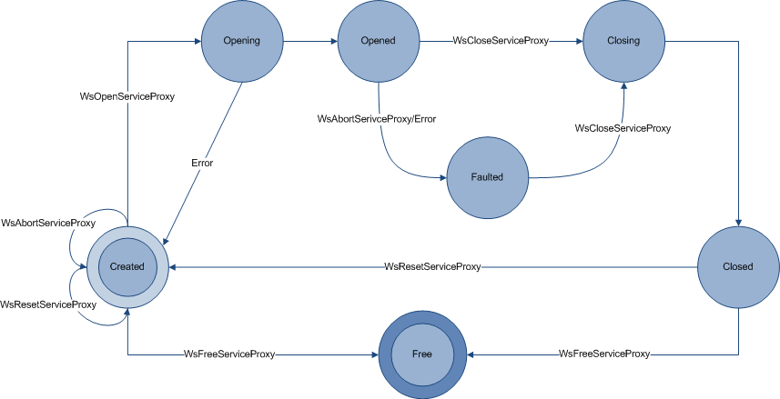

title: Service Proxy description: A service proxy is the client side proxy for a service. ms.assetid: e1a5bf5e-dbc1-43e3-981b-7db4caa08bdc keywords:
A service proxy is the client side proxy for a service. The service proxy enables applications to send and receive messages over a channel as method calls.
Service proxies are created as needed, opened, used to call a service, and closed when no longer needed. Alternatively, an application may reuse a service proxy to connect repeatedly to the same service without the expenditure of time and resources required for initialising a service proxy more than once. The following diagram illustrates the flow of the possible states of the service proxy and the function calls or events that lead from one state to another.

These service proxy states are enumerated in the WS_SERVICE_PROXY_STATE enumeration.
As the preceding diagram and the following code illustrate, a service proxy is created by a call to the WsCreateServiceProxy function. As parameters for this call, WWSAPI provides the following enumerations:
It also accepts optional parameters using the following data types:
When the service proxy has been created, the WsCreateServiceProxy function returns a reference to the service proxy, WS_SERVICE_PROXY, through an out parameter.
WS_SERVICE_PROXY* serviceProxy = NULL;
hr = WsCreateServiceProxy (
WS_TCP_CHANNEL_BINDING,
WS_CHANNEL_TYPE_DUPLEX_SESSION,
NULL,
NULL,
0,
NULL,
0,
&serviceProxy,
error);
When the service proxy has been created, the application can open the service proxy for communication to a service by calling the WsOpenServiceProxy function, passing an address structure containing the network address of the service endpoint to connect to.
WS_ENDPOINT_ADDRESS address = {0};
address.uri.chars = "net.tcp://localhost/example";
address.uri.length = wcslen("net.tcp://localhost/example";);
hr = WsOpenServiceProxy(serviceProxy, &address, NULL, error);
When the service proxy has been opened, the application can use it to make calls to the service.
hr = Add(
serviceProxy,
1,
2,
&result,
NULL,
0,
NULL,
error);
When the application no longer needs the service proxy, it closes the service proxy by calling the WsCloseServiceProxy function. It also frees the associated memory by calling WsFreeServiceProxy.
hr = WsCloseServiceProxy(
serviceProxy,
NULL,
error);
hr = WsFreeServiceProxy(
serviceProxy,
error);
Alternatively, after calling WsCloseServiceProxy an application can reuse the service proxy by calling the WsResetServiceProxy function.
hr = WsResetServiceProxy(
serviceProxy,
error);
For more information on how service proxies are used in different contexts, see the following topics:
Following application design considerations should be carefully noted when you use the WWSAPI service proxy API:
The following API elements relate to service proxies.
| Callback | Description |
|---|---|
| WS_PROXY_MESSAGE_CALLBACK | Invoked when the headers of the input message are about to be sent through or when an output message headers are just received. |
Â
| Enumeration | Description |
|---|---|
| WS_CALL_PROPERTY_ID | Enumerates optional parameters for configuring a call on a client side service operation. |
| WS_PROXY_PROPERTY_ID | Enumerates optional parameters for configuring the service proxy. |
| WS_SERVICE_PROXY_STATE | The state of the service proxy. |
Â
| Function | Description |
|---|---|
| WsAbandonCall | Abandons a specified call on a specified service proxy. |
| WsAbortServiceProxy | Cancels all pending input and output on a specified service proxy. |
| WsCall | Internal only. Serializes arguments into a message and sends it over the channel. |
| WsCloseServiceProxy | Closes a service proxy for communication. |
| WsCreateServiceProxy | Creates a service proxy. |
| WsFreeServiceProxy | Releases the memory associated with a service proxy. |
| WsGetServiceProxyProperty | Retrieves a specified service proxy property. |
| WsOpenServiceProxy | Opens a service proxy to a service endpoint. |
| WsResetServiceProxy | Resets service proxy. |
Â
| Handle | Description |
|---|---|
| WS_SERVICE_PROXY | An opaque type used to reference a service proxy. |
Â
| Structure | Description |
|---|---|
| WS_CALL_PROPERTY | Specifies a call property. |
| WS_PROXY_PROPERTY. | Specifies a proxy property. |
Â
Â
Â